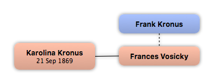

Home
Home
 Persons
Persons
 Families
Families
 Sources
Sources
 Statistics
Statistics
Frank Kronus

Context

Parents
| Father | Date of Birth | Mother | Date of Birth |
|---|
Partners & Children
| Partners | Date of Birth | Children |
|---|---|---|
 Frances Vosicky Frances Vosicky
|
Karolina Kronus
|
Events
Facts
Media
Note
Sources
Kinships
| Name | Degree of Kinship | Date of Birth | Place of Birth | Date of Death | Place of Death |
|---|---|---|---|---|---|
| Partners | |||||
| Partner or Wife | |||||
| Children | |||||
| Daughter | 21 Sep 1869 | Moravia | |||
| Grandchildren | |||||
| Granddaughter | abt 1904 | Austria | |||
| Grandson | 2 Apr 1907 | Culpeper, Catalpa, Virginia | 1994 | Culpeper, Catalpa, Virginia | |